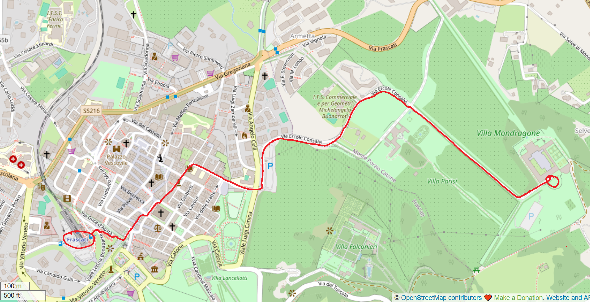
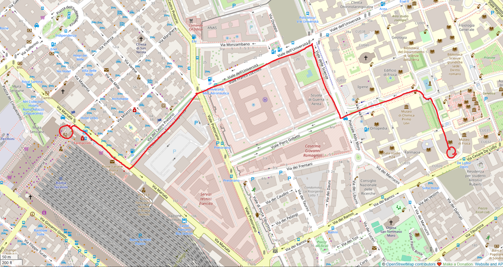

Higher Structures in Rome
The meeting will take place at the following two locations:
-
17 September:
Villa Mondragone
Take one of the rare trains from Roma Termini to Frascati (the one at 8:54am suits best), then walk uphill for around 35min/2.3km as indicated on the map below (in red or blue); or catch our private shuttles (only a few places) or consider a short taxi ride.

-
18 September:
Istituto Nazionale di Alta Matematica
The easiest is by simply walking from Termini train station for around 16min/1.3km according to the map below (in red); there are also multiple public transport options by tram or bus, none of them respecting the official schedule (or any schedule for that matter), so you might be very late. Once at the campus, enter the main gate, walk straight ahead, turn right at the big fountain with the Athena (Goddess of Wisdom=Sapienza) statue, continue towards the end of this alley, enter the Math Department, exit almost immediately in front, cross the inner courtyard, re-enter the building, turn right, step up to the first floor and open the door (ring the bell if closed) of the Istituto Nazionale di Alta Matematica (INdAM). Sounds confusing but there will be paper indications everywhere.

Invited Speakers:
Pedro Boavida (Lisbon)
Joana Cirici (Barcelona)
Domenico Fiorenza (Rome Sapienza)
Geoffroy Horel (Sorbonne Paris Nord)
Ulrich Krähmer (Dresden)
Connor Malin (MPI Bonn)
Fernando Muro (Seville)
Francesca Pratali (Utrecht)
Tommaso Rossi (Bologna)
Mathieu Stiénon (Penn State)
Bruno Vallette (Sorbonne Paris Nord)
Ping Xu (Penn State)
Local Organisers & Scientific Committee:
Niels Kowalzig
Paolo Salvatore
Sara Scaramuccia